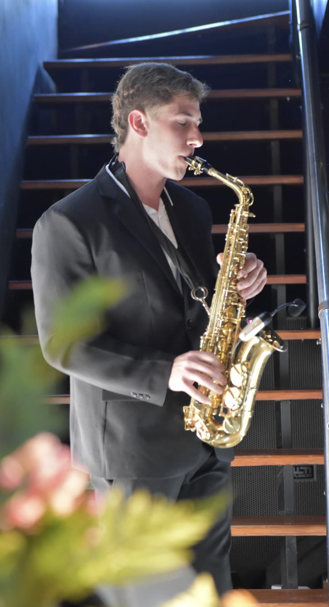
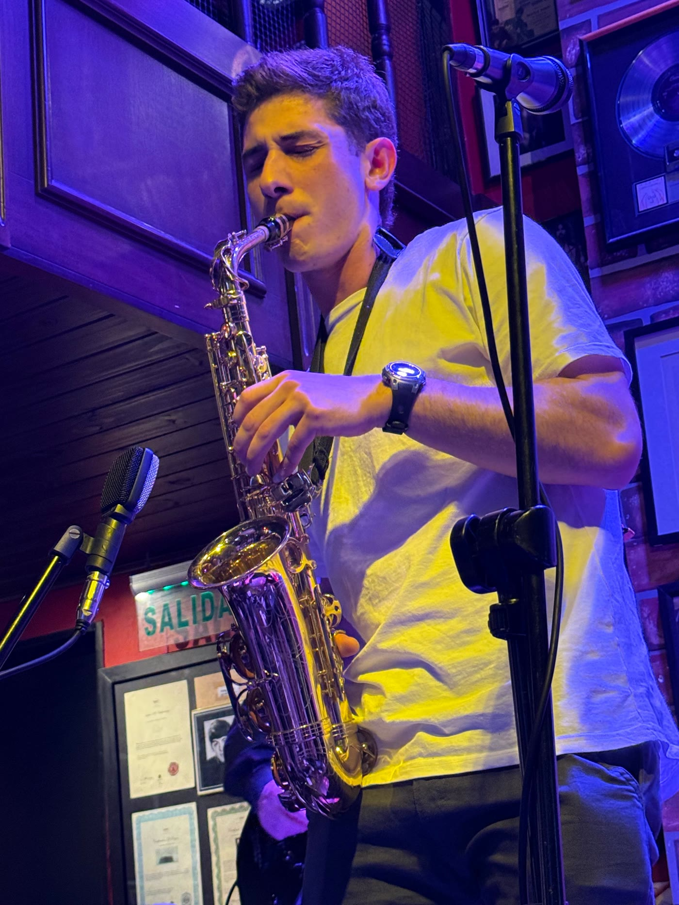
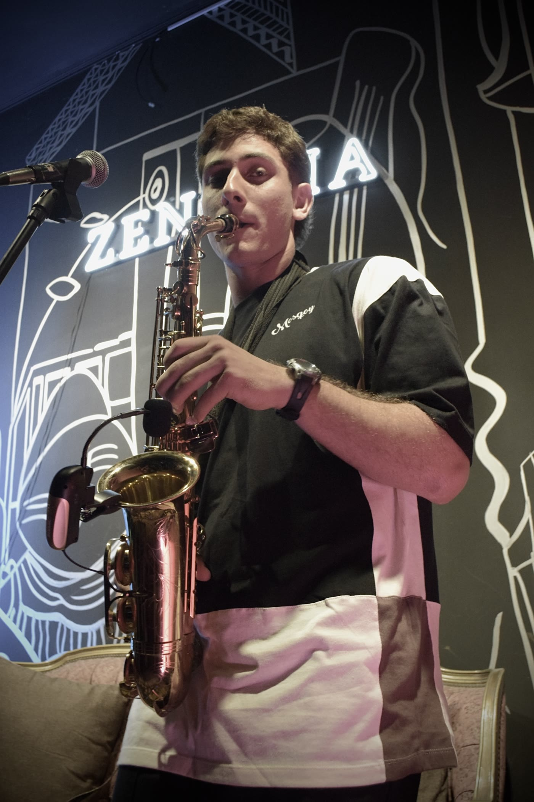

Saxofonista · Show en vivo
Soy Branco Martín. Hago un show solista de saxo en vivo sobre pistas para casamientos, recepciones, fiestas y cumpleaños. Toda la energía del saxo, sin necesidad de banda — y con sonido propio si hace falta.
El show
Toco el saxo en vivo sobre pistas cuidadosamente producidas: el sonido lleno de una banda, con la cercanía y la flexibilidad de un solista. Leo el ambiente y adapto el repertorio a cada momento —del cóctel de recepción al pico de la fiesta.
Sonido completo y potente sin necesidad de contratar una banda entera.
House, pop, latino y clásicos que todos reconocen y hacen bailar.
Recepción, brindis o pista: armamos juntos el set ideal para tu evento.

Cuento con equipo de sonido propio. Si el salón o el espacio no dispone de uno, no es problema: llevo todo lo necesario para que el show suene impecable.
Para qué me contratan
El show solista se adapta al clima de cada evento, del más íntimo al más festivo.
Ese momento mágico e íntimo en la ceremonia, el brindis o el ingreso a la fiesta.
Sumo el saxo en vivo para que tu festejo sea diferente y quede en el recuerdo.
Me sumo en vivo al DJ o toco solo sobre pistas para llevar la pista a otro nivel.
Cócteles, cenas y lanzamientos con un toque sofisticado y profesional.
En acción
Tocá play y mirá cómo suena y se vive el show en distintos eventos.
Momentos
Del club al salón de fiestas: el saxo se adapta a cualquier escenario.


También con banda
Además del show solista, sumo mi saxo a proyectos con banda y músicos en vivo para eventos más grandes o propuestas puntuales.
¿Tenés algo así en mente? Escribime y lo armamos.
ConsultarContacto
Contame de tu evento y armamos el show perfecto. Respondo rápido por WhatsApp.